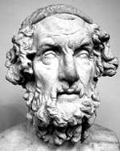

Antik Yunan tarihçilerine göre Homeros MÖ 800’lerde yaşadı. Batı edebiyatında çok büyük bir etkiye sahip olan iki temel metnin yazarıdır: İlyada ve Odysseia. Uzun şiirlerden oluşan bu iki yapıtta, Yunan tarihinde bir dönüm noktası olan Truva Savaşı sırasında Sparta ve müttefiklerinin kazandığı zafer konu alınmaktadır.

Pek çok uzman Homeros adında bir şairin gerçekten yaşamış olduğundan şüphe duymaktadır. İlyada ve Odysseia’nın yüzlerce yıllık bir sözlü geleneğin ürünü olma ihtimali göz önünde tutulmaktadır. Diğer taraftan Homeros’un halk destanlarını derleyip yeniden düzenleyerek onları bugünkü hallerine getirmiş olması da mümkündür. Her halükarda efsanevi kör şairin gerçekten yaşayıp yaşamadığı kesin olarak bilinmemektedir.
Her iki şiirin de sahip olduğu etki ise tartışmasızdır. Batı edebiyatının ilk örnekleri olarak kabul edilen İlyada ve Odysseia 3 bin yıl boyunca Virgil’den (MÖ 70-19) James Joyce (1882-1941) ve Ralph Ellison’a kadar (1914-1994) yazarlara, şairlere ve sanatçılara ilham kaynağı olmuştur. 2008 yılında bir eleştirmen Odysseia’nin Batı yolculuk romanlarının (road novel) atası olduğunu bile iddia etmiştir.
Yunan mitolojisine göre, Truva Savaşı Truva Prensi Paris, Sparta Kralı’nın eşi Helen’i kaçırınca başlamıştır. Deliye dönen kral Menelaus, Truva’ya saldırıp karısını geri almak için büyük bir güç toplar. Savaşçı Aşil ve İthaka Kralı Odysseus’un da aralarında bulunduğu Sparta ordusu tam on yıl boyunca Truva’yı kuşatma altında tutmuş ve Menelaus en sonunda şehri ele geçirmiştir.
Uzmanların Odysseia’dan önce yazıldığına inandıkları İlyada Aşil’in öyküsünü ve büyük kuşatmanın son yılını anlatır. Odysseia ise İlyada’nın kaldığı yerden devam eder. Odysseus’un İthaka’ya ve sadık karısı Penelope’ye geri dönüşü sırasında karşılaştığı tehlikelerle dolu uzun yolculuğu konu alır.
Bu iki destana ek olarak Homeros’a atfedilen çok sayıda kısa ilahi bulunmaktadır. Tıpkı Odysseia ve İlyada gibi bu şiirlerin de gerçek yazarının kim olduğu hâlâ kesin olarak bilinmemektedir.
Ek Bilgiler
1- Odysseia’nın hikayesi pek çok kitaba, oyuna ve filme konu olmuştur. James Joyce’un Ulysses’inden (1922) Koen Kardeşler’in O Brother, Where Art Thou’suna (Ah Kardeşim Neredesin?) (2000) kadar sayısız örnek verilebilir. Benzer bir şekilde İlyada da, Shakespeare’in Troilus ve Cressiada’sından (1602) Brad Pitt’in (1963- ) Aşil’i canlandırdığı 2004 tarihli Troy (Truva) filmine kadar çok sayıda yapıma ilham kaynağı olmuştur.
2- Odyssey kelimesi genel olarak uzun yolculukları anlatmak için kullanılır. “Homerik” sözcüğü ise kahramanca yapılmış ehemmiyetli işleri betimler.
3- Odysseia ve İlyada’nın ilk İngilizce çevirisi George Chapman (1559-1634) tarafından tamamlanmış ve yüzyıllar boyunca Homeros çevirilerinin en etkileyicisi olarak kabul edilmiştir. Aralarında İngiliz şair Alexander Pope (1688-1744), Amerikalı gazeteci William Culten Bryant (1794-1878) ve Princeton Üniversitesi’nden Profesör Robert Fagles’ın (1933-2008) da bulunduğu pek çok başka önemli isim de destanları İngilizce’ye çevirmiştir.